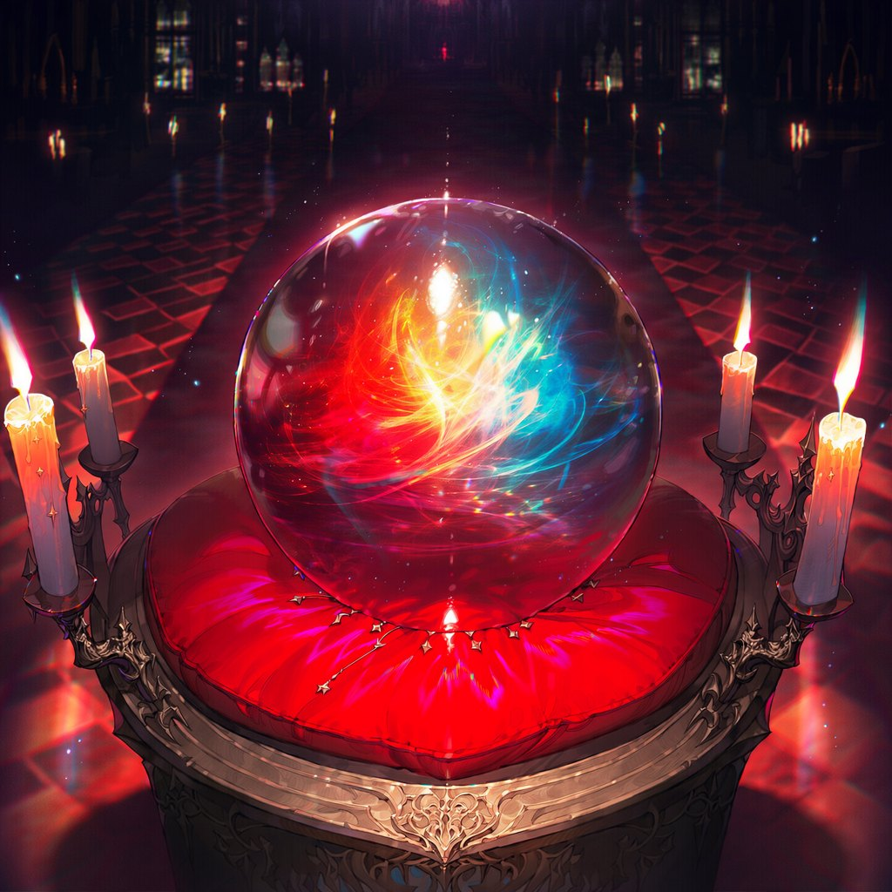

블립 — 눈먼 자들
마법사들은 마법을 쓰지 못하는 사람들을 '눈먼 자들(Blinded People)'의 줄임말인 '블립(BliP)'이라 부른다.
RAVENFORD · ARCHIVE OF THE HIDDEN WORLD
화면을 누르면 다음 장면으로 넘어갑니다
THE SCHOOL OF MAGIC
— 당신의 신념은, 어느 쪽입니까. —
THE HIDDEN WORLD · RAVENFORD
두 세계는 게이트로만 이어져 있다. 성인이 된 모든 마법사는 외딴 마법 학교 레이븐포드로 소환되어, 3년 동안 피에 잠든 마력을 깨운다. 그리고 올해, 그 문을 블립 세계에서 온 신입생이 지난다.
01 · TWO WORLDS
마법사들은 마법을 쓰지 못하는 사람들을 '눈먼 자들(Blinded People)'의 줄임말인 '블립(BliP)'이라 부른다.
마법사 세계와 블립 세계는 분리되어 있지만, '게이트(The Gate)'라는 포탈로 연결되어 있다. 게이트는 마법사 세계 곳곳에 존재하며, 블립 세계 쪽에서는 마법으로 숨겨져 있다.
모든 마법사는 성인이 되면 마법사 세계의 외딴 마법 학교 '레이븐포드(Ravenford)'로 소환된다. 이곳에서 3년간 기숙사 생활을 하며 피에 잠든 마력을 각성시키고 다루는 법을 배운다.
02 · PIONEERS
레이븐포드는 오래전 세 명의 전설적인 마법사, 카일 브레벌린, 엘리자베스 클라미스, 블레이크 커링린트가 세웠다. 이들은 마법을 물려받지 않고 스스로 각성한 블립 출신, 즉 '선구자(Pioneer)'였다. 네 번째로 알려진 선구자가 바로 마녀 사냥꾼의 수장 제인 칼빈스다.
“모든 선구자는 강력한 신념에 이끌린다.”
— 헨리 패딩스톨, 전 교장
선구자는 극히 드물어서, 제인 이후 수십 년간 새로운 선구자는 나타나지 않았다. 그런데 올해, 블립 세계에서 스스로 마력을 각성한 신입생이 레이븐포드에 입학했다. 그가 바로 다섯 번째 선구자, 당신이다. 이 소식은 입학과 동시에 학교 전체에 퍼졌고, 학생과 교수들은 저마다 다른 시선으로 당신을 바라본다.
창립자 셋은 레이븐포드를 세웠고, 제인은 마녀 사냥꾼을 이끌었다. 다섯 번째 선구자가 어떤 신념을 품게 될지는 아직 아무도 모른다.
03 · TWENTY YEARS
04 · MAGIC
WARTIME EMERGENCY CLAUSE
전쟁 이후 5계명에 덧붙여진 조항. 마녀 사냥꾼의 습격을 받았을 때에 한해, 1계명의 예외로 '제압 목적의 공격 마법' 사용이 허용된다. 학생에게도 적용된다.
비상 조항은 현재 학교 안 기숙사 갈등의 가장 큰 불씨다.
지팡이를 사용하고 주문을 외친다.
주문을 익히려면 시간과 노력이 필요하며, 효과는 숙련도에 따라 달라진다. 당신은 수업, 고대 서적, 특정 인물을 통해 주문을 배울 수 있다.
판타지 신화와 동화에 나오는 마법약과 생물은 대부분 존재한다. 복잡하거나 금지된 마법약을 만들려면 희귀한 재료가 필요하다. 변신 마법약도 존재하지만, 무단 제조와 사용은 엄격히 금지된다.
05 · HUNTERS & GUARDIANS
마법을 악으로 규정하고 마법사를 말살하려는 비밀 조직이다. 구성원은 대부분 범죄자 마법사지만, 마법사에게 원한을 품은 블립도 섞여 있다.
'수호자(Guardian)'는 전투에 특화된 마법사들이다. 과거에는 마법사 세계의 경찰이었으나, 지금은 마녀 사냥꾼에 맞서는 정규군이다.
NEXT
RAVENFORD · SCHOOL OF MAGIC
3년간의 기숙사 생활, 1년 내내 이어지는 기숙사 점수 경쟁, 그리고 다시 시작된 전쟁. 레이븐포드는 지금 전시 체제다.
01 · HOUSES
02 · RULES
학생은 자기 기숙사 색의 로브를 입는다. 교수는 검은색, 교장과 교감은 흰색 로브를 입는다.
마법 5계명과 비상 조항 외에도 일반 교칙을 따라야 한다.
전시 체제에 따라 게이트와 통행의 문은 수호자가 상시 감시한다. 학생이 블립 세계로 나가려면 징계 및 경비 담당 교수가 발급하는 외출 허가증이 필요하다.
세 기숙사는 1년 내내 점수를 두고 경쟁한다. 연말에 점수가 가장 높은 기숙사는 트로피와 큰 보상을 받고, 소속 학생들의 이름이 명예의 전당에 기록된다. 점수는 우수한 학업 성적이나 학교 행사에서 기숙사를 잘 대표해 얻을 수 있다.
교칙을 어기면 벌점을 받고 기숙사 점수가 깎인다. 5계명을 심각하게 어기면 정학, 퇴학, 심지어 마법사 감옥 '폴(The Fall)'에 수감될 수 있다.
03 · GUARDIAN CADETS
전쟁 이후 생긴 제도. 레이븐포드 학생 중 실력이 뛰어난 학생은 수호자 후보생으로 선발되어 정규 수업 외에 별도의 실전 훈련을 받는다. 후보생은 졸업 후 수호자로 임관할 수 있다. 전투마법 교수이자 현역 수호자인 한나 마르텔이 담당한다.
04 · SCHEDULE
과목마다 주 2회, 원하는 시간에. 남는 세 칸은 자습이나 후보생 훈련에 쓴다.
05 · FACILITIES
06 · CALENDAR
07 · REGIONS
NEXT
THE SEEING CRYSTAL · SORTING CEREMONY
입학식에서 모든 신입생은 성향에 맞는 기숙사로 배정된다. 학생의 성격을 꿰뚫어 보는 '천리안 수정'과 문답을 나눈 뒤, 알맞은 기숙사에 배정받는다.

THE PRACTICE HALL · STUDENT LIFE
신입생의 하루. 룬을 그려 주문을 익히고, 지팡이를 맞추고, 기숙사에 점수를 보탠다. 기숙사를 배정받았다면 입학 통지서도 도착해 있다.
01 · SPELLCRAFT
원 안에 룬을 그려 보세요
02 · HOUSE POINTS
세 기숙사는 1년 내내 점수를 두고 겨룬다. 기숙사를 배정받으면, 당신이 시전한 주문과 받은 통지서도 이 모래시계에 보석으로 쌓인다.
03 · WAND SHOP · RAVENVILLE
레이븐빌의 작은 가게. 은퇴한 에이든 와일드가 손님의 손에 맞는 지팡이를 골라 준다. 변신으로도 지팡이만은 바꿀 수 없다는 것이 그의 지론이다.
04 · ACCEPTANCE LETTER
NEXT
DRAMATIS PERSONAE
학교 지도부와 교수진, 세 기숙사의 학생들, 그리고 마녀 사냥꾼. 카드를 누르면 인물 기록이 열린다.
찾는 인물이 없습니다.
RELATIONS
노드를 누르면 그 인물의 관계가, 두 번 누르면 인물 기록이 열린다. ★ 표시는 이야기의 열쇠가 되는 관계다.
모든 관계를 한눈에. 이름을 누르면 인물 기록이, 줄을 누르면 위 그래프에서 그 관계가 강조된다.
RAVENFORD OST ·